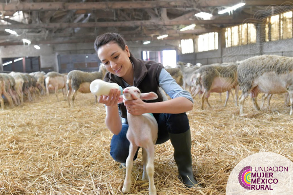
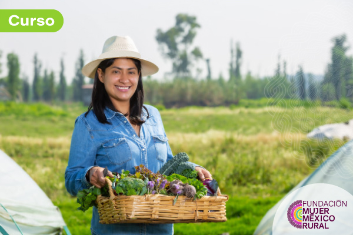
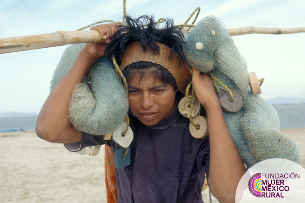

      <!-- ======= Articulos Section ======= -->
      <section id="about" class="about">
        <div class="container" data-aos="fade-up">
  
          <!--
          <div class="section-title">
            <h2>Artículos</h2>
            <p>Nuevos artículos</p>
          </div>
          <div class="col-md-12 row"> 
          <div class="col-md-7 col-lg-7">
          <div id="carouselArticulos" class="carousel slide" data-ride="carousel">
            <div class="carousel-inner">
              <div class="carousel-item active itemArt">
                
                <h2 onclick="cargarArticulo()">Las mujeres y el trabajo decente</h2>
                <p>En promedio, las mujeres representan el 40 por ciento de la fuerza laboral agrícola de los países en vías de desarrollo; 
                  en América Latina dicho porcentaje equivale al 20 por ciento, mientras que en algunas partes de África y Asia llega a un 50 por ciento o más.</p>
                  <a onclick="cargarArticulo()">Continua leyendo...</a>
                  <p class="fechaArticulo">15 de Julio de 2020</p>
              </div>
              <div class="carousel-item itemArt">
                
                <h2 onclick="cargarArticulo()">Mujeres rurales en tiempos de COVID-19</h2>
                <p>“En relación con el empoderamiento económico de las mujeres, las brechas de acceso en el sector rural son: 
                  la carencia de tenencia de la tierra y el acceso al sector financiero.”</p> 
                  <a onclick="cargarArticulo()">Continua leyendo...</a>
                  <p class="fechaArticulo">20 de Mayo de 2020</p>
              </div>
              <div class="carousel-item itemArt">
                
                <h2 onclick="cargarArticulo()">Promover el empleo juvenil y reducir el trabajo infantil en la agricultura</h2>
                <p>La FAO ofrece nuevo curso en línea donde se se presentan estrategias para fortalecer el impacto de las políticas y 
                  programas de reducción del trabajo infantil y de la promoción del empleo juvenil mediante el examen conjunto de 
                  ambas cuestiones. </p>
                  <a onclick="cargarArticulo()">Continua leyendo...</a>
                  <p class="fechaArticulo">01 de Abril de 2020</p>
              </div>
            </div>
            <a class="carousel-control-prev" href="#carouselArticulos" role="button" data-slide="prev" style="max-height: 390px;">
              <span class="carousel-control-prev-icon" aria-hidden="true"></span>
              <span class="sr-only">Previous</span>
            </a>
            <a class="carousel-control-next" href="#carouselArticulos" role="button" data-slide="next" style="max-height: 390px;">
              <span class="carousel-control-next-icon" aria-hidden="true"></span>
              <span class="sr-only">Next</span>
            </a>
          </div>
        </div>

        <div class="col-md-5 col-lg-5 masArticulos">
          <h4 style="color: #5E0342; text-align: center; font-weight: bold;cursor: auto;">Más Artículos</h4>
            <div class="row col-xs-12">
              <div class="col-lg-4 col-md-4 col-sm-4 col-xs-4"></div>
              <div class="col-lg-8 col-md-8 col-sm-8 col-xs-8 align-bottom"><h5 onclick="cargarArticulo()">Las mujeres y el trabajo decente</h5></div>
            </div>
            <hr>
            <div class="row col-xs-12">
              <div class="col-lg-4 col-md-4 col-sm-4 col-xs-4"></div>
              <div class="col-lg-8 col-md-8 col-sm-8 col-xs-8 "><h5 onclick="cargarArticulo()">Mujeres rurales en tiempos del COVID-19</h5></div>
            </div>
            <hr>
            <div class="row col-xs-12">
              <div class="col-lg-4 col-md-4 col-sm-4 col-xs-4"></div>
              <div class="col-lg-8 col-md-8 col-sm-8 col-xs-8 "><h5 onclick="cargarArticulo()">Promover el empleo juvenil y reducir el trabajo infantil en la agricultura</h5></div>
            </div>
            <hr>
            <div class="row col-xs-12">
              <div class="col-lg-4 col-md-4 col-sm-4 col-xs-4"></div>
              <div class="col-lg-8 col-md-8 col-sm-8 col-xs-8 "><h5 onclick="cargarArticulo()">Mujeres rurales en tiempos del COVID-19</h5></div>
            </div>
            <hr>
        </div>
      </div>
        </div>-->
      </section><!-- End Articulos Section -->

    <!-- ======= About Section ======= -->
    <section id="about" class="about">
      <div class="container" data-aos="fade-up">

        <div class="section-title">
          <h2>Acerca de</h2>
          <p>¿Quiénes somos?</p>
        </div>

        <div class="row">
          <div class="col-lg-6 order-1 order-lg-2" data-aos="fade-left" data-aos-delay="100">
            
          </div>
          <div class="col-lg-6 pt-4 pt-lg-0 order-2 order-lg-1 content acercaDeStyle">
          <p>
            <b>En la Fundación Mujer México Rural (FMMR)</b> trabajamos día a día por la promoción de la reciprocidad, 
            solidaridad y empatía entre las personas y los pueblos a través del fomento de la cooperación para el 
            desarrollo y de toda iniciativa que contribuyan a dignificar las condiciones de vida de las personas. 
            La <b>FMMR</b> representa una estrategia única para promover la <b>economía social y solidaria</b>.
          </p>

          <p>
            La <b>FMMR</b> está focalizada a <b>reducir la vulnerabilidad de los emprendimientos</b> de mujeres mexicanas en todos los territorios.
          </p>

          <p>
            La estrategia <b>empodera a las mujeres</b> e incentiva la incorporación de sus negocios hacia una economía digital. 
          </p>

          <p>Destaca la relevancia de las </b>competencias blandas y gerenciales. “Capacitar para Innovar”.</b></p>

          <p><b>Fundación Mujer México Rural (FMMR)</b>
            <ol>
              <li><b>Genera valor</b> de todas las marcas en conjunto, haciendo equipo entre todas las socias fundadoras</li>
              <li><b>Conecta y promueve</b> en todos los territorios</li>
              <li><b>Fortalece</b> el sentido de la <b>reciprocidad, la solidaridad y la empatía</b></li>
              <li>Crea <b>sinergias y fomenta el intercambio</b> entre los distintos productos que se ofrecen desde la <b>FMMR</b></li>
            </ol>
          </p>

        </br>

            <a href="about.html" class="learn-more-btn">Ver mas</a>
          </div>
        </div>

      </div>
    </section><!-- End About Section -->

